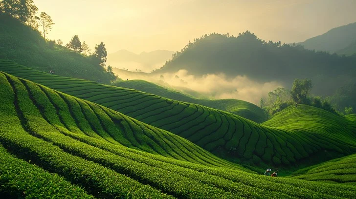
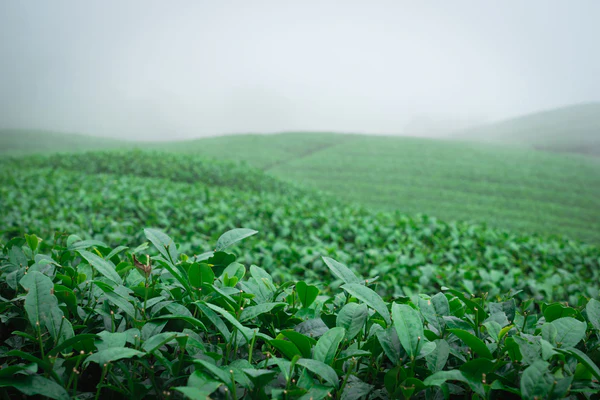
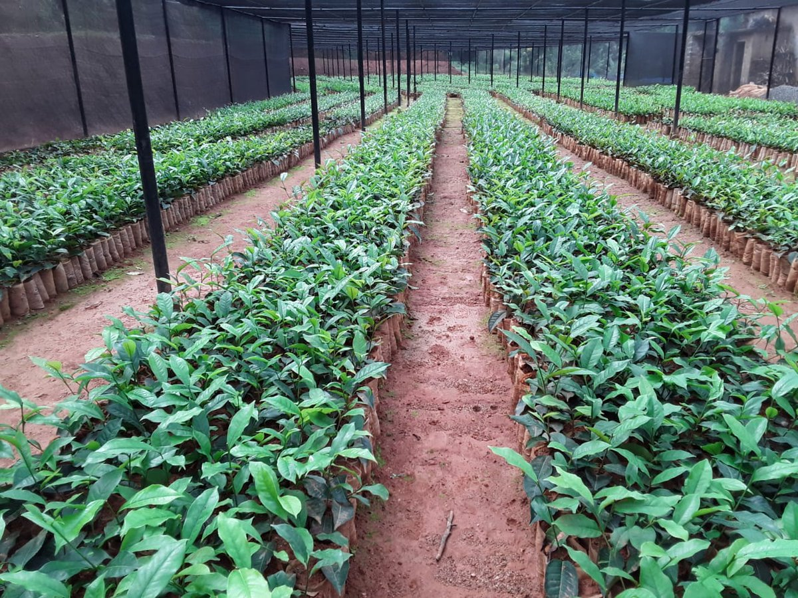
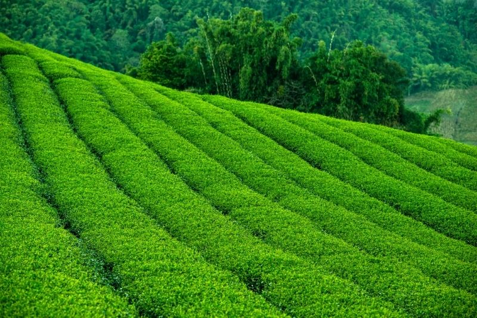
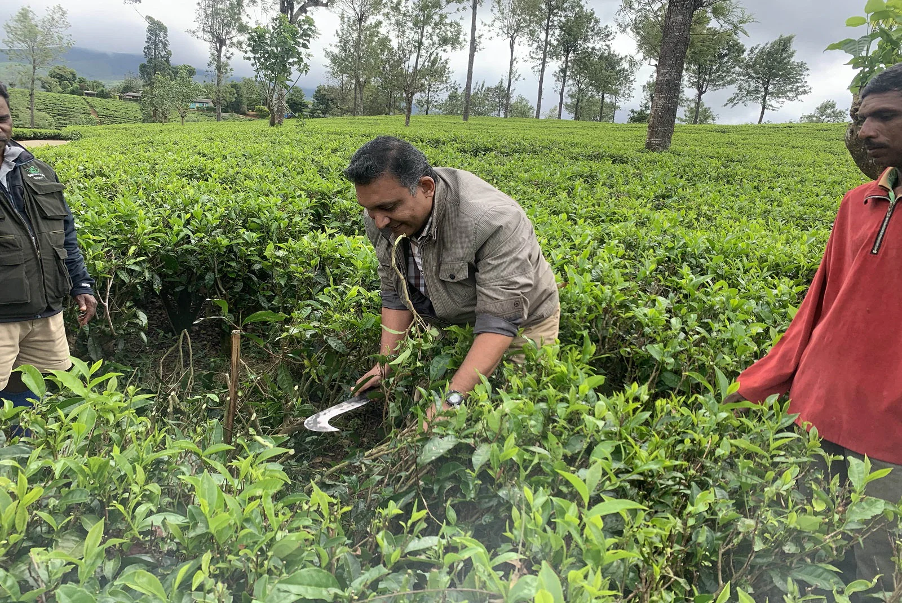

Excellence Born from the Highland Soil
Discover the meticulous journey of Ceylon tea, from the misty climate of Badulla to your morning cup.
Climate Requirements
Tea thrives in a tropical and subtropical climate. In Sri Lanka, the specific combination of altitude and humidity creates the unique character of our high grown teas.

Soil Conditions
The foundation of quality tea lies in the earth. Sri Lankan tea estates favor acidic soils rich in iron and phosphorus.
- check_circle Optimal pH levels between 4.5 and 5.5 for high nutrient absorption.
- check_circle Excellent drainage systems to prevent waterlogging on steep slopes.
- check_circle Deep, loamy soils that allow root systems to penetrate deep into the mountainside.
The Planting Journey
A multi-year commitment to quality, starting from the nursery to the sprawling estate hills.
Nursery Propagation
Carefully selected cuttings are nurtured in specialized nurseries for 9-12 months until they reach optimal planting height.

Terrace Planting
Saplings are transplanted to the mountainside in contoured terraces to prevent erosion and maximize water efficiency.

Pruning & Training
Bush height is maintained through regular pruning to create a 'plucking table', ensuring consistent growth of tender shoots.

Art of Harvesting
Two Leaves and a Bud
We only harvest the top two tender leaves and the unopened bud, where the concentration of flavor and antioxidants is highest.
7-Day Plucking Cycles
Fields are visited every 7 to 10 days to ensure that only the freshest growth is picked, maintaining the estate's quality standards.
Immediate Processing
Harvested leaves are transported to the estate factory within hours to begin the drying and fermentation process.